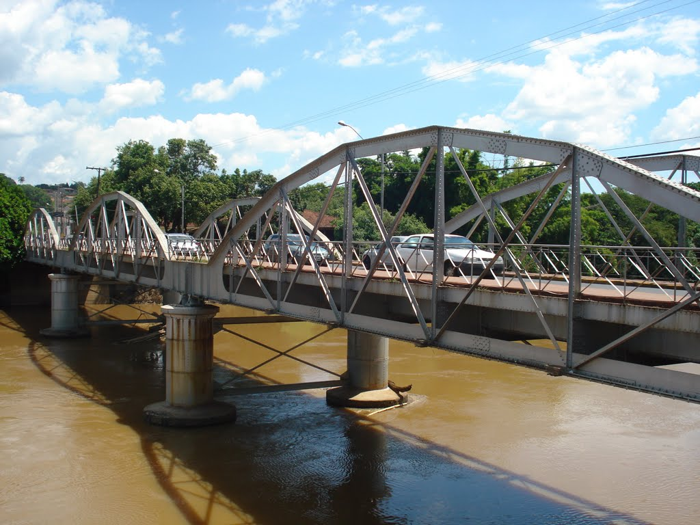
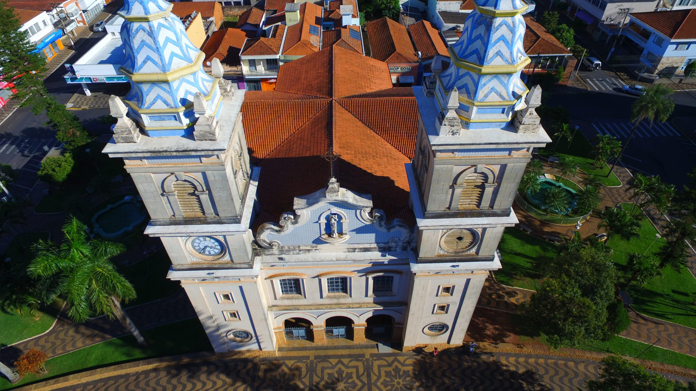

Avenida do Comércio
Um dos pontos mais movimentados da cidade, cheio de lojas e vida urbana.
Eu amo PF
O famoso letreiro para tirar fotos e guardar lembranças da cidade.

Ponte Metálica
Uma das construções mais marcantes da cidade, ligando histórias e gerações.

Igreja Matriz
Principal igreja de Porto Ferreira que representa a fé dos Ferreirenses

Rua dos Guarda-Chuvas
Um espaço turístico charmoso, perfeito para fotos e passeios.